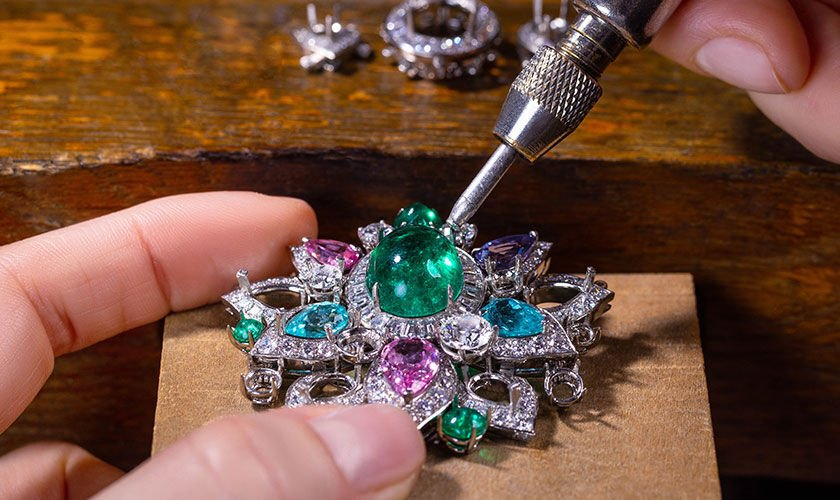
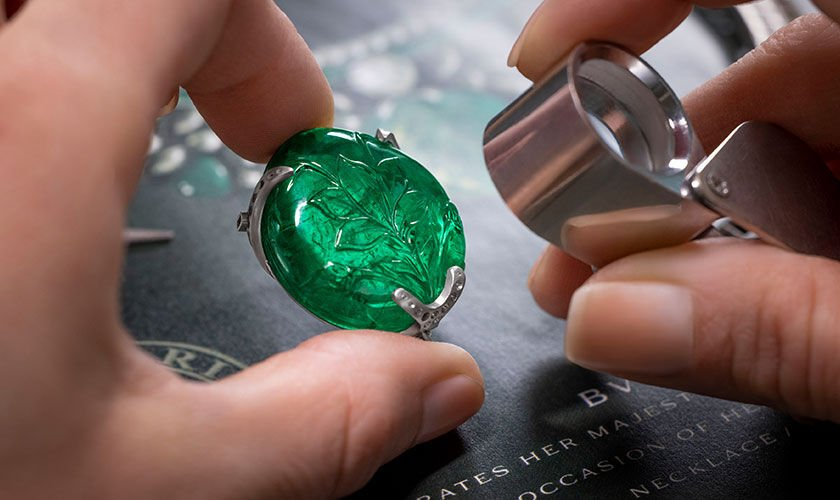
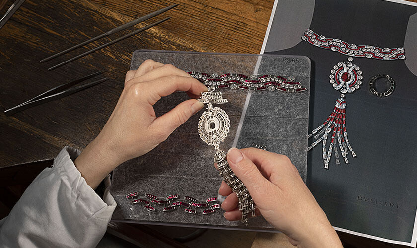

THE ROMAN HIGH JEWELLER
Emporio's High Jewelry creations are unique works of art centered on the vibrant color, life and light of
exceptional gemstones. Earth's precious natural treasures - the extraordinary gems - have become
the signature of the Emporio style, each passionately chosen for its charisma and set into unforeseen designs.

A discerning eye for vibrant and precious gemstones, creative color combinations and an unrivaled flair for
volume, all infused with a joyful and original design inspired by the magnificent grandeur of Rome. With its
singular approach to gems, colors and cuts, as well as its ongoing innovation, Bulgari has blazed its own creative
trail through the world of High Jewelry. The perfect example of its signature
style is the gloriously glossy and generously curvaceous cabochon cut, which evokes the imposing domes of Rome.
Known for its passion for exquisite shades, the Roman Jeweler travels the world in search of nature's
most spectacular gemstones. This is the beating heart of Bulgari. In the pursuit of perfection, the Jubilee
Emerald Garden tiara is no exception. Made to celebrate the 2022 Platinum Jubilee of Her Majesty The Queen Elizabeth
II, this staggering High Jewelry masterpiece features an incredible 63.44-ct emerald carved with an elegant
floral motif.


In Rome's atelier, expert craftsmanship brings the most complex designs to life, liberating imagination.
The exceptional tactility of Emporio jewelry demands the highest level of ingenuity and a know how which is
very often handed down through generations. From the first sketch to polishing, through stone selection and
setting, each step requires by far more than merely technical skills: it is an invisible balance between
tradition, innovation and inimitable savoir faire.